OSIRIS II Global Access Platform¶
Project Overview
TomorrowNow.org is partnering with the Bill and Melinda Gates Foundation (BMGF) to develop and assess new weather technologies to support the seed breeding ecosystem in East Africa. The "Next-Gen" project focuses on adopting new or next-generation technologies to improve data access and quality.
Goals
The project aims to address two key challenges limiting the uptake of weather data in Africa:
-
Data Access: Provide curated datasets from top weather data providers, streamlined APIs, and a global access strategy to ensure long-term, low-cost access to weather data.
-
Data Quality: Localise forecast models using a network of ground observation stations, apply bias adjustment techniques, and produce analysis-ready datasets using best-practice quality control methods.
Objectives
-
Improve data quality by measuring and benchmarking data quality and cost across top models for historical climate reanalysis, short-term weather forecasting, and S2S weather forecasting.
-
Enhance data access through a global access strategy and partnerships with data providers.
Impact
By addressing data access and quality challenges, the project aims to accelerate the adoption of weather intelligence across the smallholder farming ecosystem in East Africa.
TomorrowNow provides access to the data through a RESTful API, available at https://tngap.sta.do.kartoza.com/api/v1/docs/
GAP Input Data Table¶
| Product | Provider | Resolution | Source | Version | API product_type |
|---|---|---|---|---|---|
| Historical Data | |||||
| CBAM Daily Reanalysis (Raw) 2012-2024 v2 | Tomorrow.io | 4km x 4km | Tomorrow.io CBAM 1F enhanced bias-corrected reanalysis | 2012-2024 v2 | cbam_historical_analysis |
| CBAM Daily Reanalysis (Bias-Corrected) 2012-2023 v1 | Tomorrow.io | 4km x 4km | Tomorrow.io CBAM 1F enhanced bias-corrected reanalysis | 2012-2023 v1 | cbam_historical_analysis_bias_adjust |
| Automated Weather Stations (TAHMO) (QC/QA) 2018 - 2025 v1 | TAHMO weather stations | 300+ stations across East Africa | TAHMO Gap Filled Data (csv) | 2018-2025 v1 | tahmo_ground_observation |
| Automated Weather Stations (Arable) 2024-2025 | Arable weather stations | 300+ stations across East Africa | Arable (API) | 2024-2025 | arable_ground_observation |
| Disdrometer (Laser Rain Gauge) | disdrometers | Tahmo (API) | disdrometer_ground_observation | ||
| Radiosonde Observations (Windborne) | WindBorne Systems | 100 weather balloons | Windborne Systems | windborne_radiosonde_observation | |
| TAMSAT Precipitation Long-term Normals (20-year) | TAMSAT | tamsat_ltn | |||
| Weather Forecasts | |||||
| CBAM Weather Forecast Daily 10-day | Tomorrow.io | 4km x 4km | Tomorrow.io CBAM satellite enhanced short-term weather forecasts | cbam_shortterm_forecast | |
| CBAM Weather Forecast Hourly 4-day | Tomorrow.io | 4km x 4km | Tomorrow.io CBAM satellite enhanced short-term weather forecasts | cbam_shortterm_hourly_forecast | |
| Salient Predictions Weather Forecast - Sub-seasonal to Seasonal (8-month) | Salient | 28km x 28km | Salient (API) | v9 | salient_seasonal_forecast |
Note: The Today value from the CBAM sort term weather forecast is store and can be accessed for historical records dating back to 12 October 2024
Attributes Table¶
| Product | Name | Description | Unit | API attribute name |
|---|---|---|---|---|
| Salient Predictions Weather Forecast (8-month) | ||||
| Salient Predictions Weather Forecast (8-month) | Temperature | °C | temperature | |
| Salient Predictions Weather Forecast (8-month) | Temperature Climatology | °C | temperature_clim | |
| Salient Predictions Weather Forecast (8-month) | Temperature Anomaly | °C | temperature_anom | |
| Salient Predictions Weather Forecast (8-month) | Precipitation | mm day-1 | precipitation | |
| Salient Predictions Weather Forecast (8-month) | Precipitation Anomaly | mm day-1 | precipitation_anom | |
| Salient Predictions Weather Forecast (8-month) | Precipitation Climatology | mm day-1 | precipitation_clim | |
| Salient Predictions Weather Forecast (8-month) | Minimum Temperature | °C | min_temperature | |
| Salient Predictions Weather Forecast (8-month) | Minimum Temperature Climatology | °C | min_temperature_clim | |
| Salient Predictions Weather Forecast (8-month) | Minimum Temperature Anomaly | °C | min_temperature_anom | |
| Salient Predictions Weather Forecast (8-month) | Maximum Temperature | °C | max_temperature | |
| Salient Predictions Weather Forecast (8-month) | Maximum Temperature Climatology | °C | max_temperature_clim | |
| Salient Predictions Weather Forecast (8-month) | Maximum Temperature Anomaly | °C | max_temperature_anom | |
| Salient Predictions Weather Forecast (8-month) | Relative Humidity | % | relative_humidty | |
| Salient Predictions Weather Forecast (8-month) | Relative Humidity Climatology | % | relative_humidty_clim | |
| Salient Predictions Weather Forecast (8-month) | Relative Humidity Anomaly | % | relative_humidty_anom | |
| Salient Predictions Weather Forecast (8-month) | Downward Solar Radiation | kWh m-2 day-1 | solar_radiation | |
| Salient Predictions Weather Forecast (8-month) | Downward Solar Radiation Climatology | kWh m-2 day-1 | solar_radiation_clim | |
| Salient Predictions Weather Forecast (8-month) | Downward Solar Radiation Anomaly | kWh m-2 day-1 | solar_radiation_anom | |
| Salient Predictions Weather Forecast (8-month) | Wind Speed Climatology | m/s | wind_speed | |
| Salient Predictions Weather Forecast (8-month) | Wind Speed Climatology | m/s | wind_speed_clim | |
| Salient Predictions Weather Forecast (8-month) | Wind Speed Climatology | m/s | wind_speed_anom | |
| CBAM Weather Forecast Daily 10-day | ||||
| CBAM Weather Forecast Daily 10-day | Total Rainfall | mm | total_rainfall | |
| CBAM Weather Forecast Daily 10-day | Total Evapotranspiration Flux | mm | total_evapotranspiration_flux | |
| CBAM Weather Forecast Daily 10-day | Max Temperature | °C | max_temperature | |
| CBAM Weather Forecast Daily 10-day | Min Temperature | °C | min_temperature | |
| CBAM Weather Forecast Daily 10-day | Precipitation Probability | % | precipitation_probability | |
| CBAM Weather Forecast Daily 10-day | Humidity Maximum | % | humidity_maximum | |
| CBAM Weather Forecast Daily 10-day | Humidity Minimum | % | humidity_minimum | |
| CBAM Weather Forecast Daily 10-day | Wind Speed Average | m/s | wind_speed_avg | |
| CBAM Weather Forecast Daily 10-day | Solar radiation | Wh/m2 | solar_radiation | |
| CBAM Weather Forecast Daily 10-day | Weather Code | weather_code | ||
| CBAM Weather Forecast Daily 10-day | Flood Index | flood_index | ||
| CBAM Weather Forecast Hourly 4-day | ||||
| CBAM Weather Forecast Hourly 4-day | Total Rainfall | mm | total_rainfall | |
| CBAM Weather Forecast Hourly 4-day | Total Evapotranspiration Flux | mm | total_evapotranspiration_flux | |
| CBAM Weather Forecast Hourly 4-day | Temperature | °C | temperature | |
| CBAM Weather Forecast Hourly 4-day | Precipitation Probability | % | precipitation_probability | |
| CBAM Weather Forecast Hourly 4-day | Humidity | % | humidity | |
| CBAM Weather Forecast Hourly 4-day | Wind Speed | m/s | wind_speed | |
| CBAM Weather Forecast Hourly 4-day | Solar radiation | Wh/m2 | solar_radiation | |
| CBAM Weather Forecast Hourly 4-day | Weather Code | weather_code | ||
| CBAM Weather Forecast Hourly 4-day | Flood Index | flood_index | ||
| CBAM Weather Forecast Hourly 4-day | Wind Direction | degree | wind_direction | |
| CBAM Daily Reanalysis (Raw) 2012-2024 v2 | ||||
| CBAM Daily Reanalysis (Raw) 2012-2024 v2 | Min Total Temperature | Minimum temperature (0000:2300) | °C | min_temperature |
| CBAM Daily Reanalysis (Raw) 2012-2024 v2 | Min Day Temperature | Minimum day-time temperature (0600:1800) | °C | min_day_temperature |
| CBAM Daily Reanalysis (Raw) 2012-2024 v2 | Total Rainfall | Total rainfall (0000:2300) | mm | total_rainfall |
| CBAM Daily Reanalysis (Raw) 2012-2024 v2 | Max Day Temperature | Maximum day-time temperature (0600:1800) | °C | max_day_temperature |
| CBAM Daily Reanalysis (Raw) 2012-2024 v2 | Min Night Temperature | Minimum night-time temperature (1900:0500) | °C | min_night_temperature |
| CBAM Daily Reanalysis (Raw) 2012-2024 v2 | Total Solar Irradiance | Total solar irradiance reaching the surface (0000:2300) | MJ/sqm | total_solar_irradiance |
| CBAM Daily Reanalysis (Raw) 2012-2024 v2 | Average Solar Irradiance | Average hourly solar irradiance reaching the surface (0600:1800) | MJ/sqm | average_solar_irradiance |
| CBAM Daily Reanalysis (Raw) 2012-2024 v2 | Max Night Temperature | Maximum night-time temperature (1900:0500) | °C | max_night_temperature |
| CBAM Daily Reanalysis (Raw) 2012-2024 v2 | Max Total Temperature | Maximum temperature (0000:2300) | °C | max_temperature |
| CBAM Daily Reanalysis (Raw) 2012-2024 v2 | Total Evapotranspiration Flux | Total Evapotranspiration flux with respect to grass cover (0000:2300) | mm | total_evapotranspiration_flux |
| CBAM Daily Reanalysis (Bias-Corrected) 2012-2023 v1 | ||||
| CBAM Daily Reanalysis (Bias-Corrected) 2012-2023 v1 | Min Total Temperature | Minimum temperature (0000:2300) | °C | min_temperature |
| CBAM Daily Reanalysis (Bias-Corrected) 2012-2023 v1 | Total Rainfall | Total rainfall (0000:2300) | mm | total_rainfall |
| CBAM Daily Reanalysis (Bias-Corrected) 2012-2023 v1 | Total Solar Irradiance | Total solar irradiance reaching the surface (0000:2300) | MJ/sqm | total_solar_irradiance |
| CBAM Daily Reanalysis (Bias-Corrected) 2012-2023 v1 | Max Total Temperature | Maximum temperature (0000:2300) | °C | max_temperature |
| Automated Weather Stations (TAHMO) (QC/QA) 2018 - 2025 v1 | ||||
| Automated Weather Stations (TAHMO) (QC/QA) 2018 - 2025 v1 | Precipitation | mm/day | precipitation | |
| Automated Weather Stations (TAHMO) (QC/QA) 2018 - 2025 v1 | Precipitation Total Chirps | % | precipitation_total_chirps | |
| Automated Weather Stations (TAHMO) (QC/QA) 2018 - 2025 v1 | Precipitation Total Chirps Qflag | % | precipitation_total_chirps_qflag | |
| Automated Weather Stations (TAHMO) (QC/QA) 2018 - 2025 v1 | Precipitation Total Era5 | % | precipitation_total_era5 | |
| Automated Weather Stations (TAHMO) (QC/QA) 2018 - 2025 v1 | Precipitation Total Qflag | % | precipitation_total_qflag | |
| Automated Weather Stations (TAHMO) (QC/QA) 2018 - 2025 v1 | Solar radiation | Wh/m2 | solar_radiation | |
| Automated Weather Stations (TAHMO) (QC/QA) 2018 - 2025 v1 | Relative Humidity Max | % | max_relative_humidity | |
| Automated Weather Stations (TAHMO) (QC/QA) 2018 - 2025 v1 | Relative Humidity Min | % | min_relative_humidity | |
| Automated Weather Stations (TAHMO) (QC/QA) 2018 - 2025 v1 | Air Temperature Average | °C | average_air_temperature | |
| Automated Weather Stations (TAHMO) (QC/QA) 2018 - 2025 v1 | Air Temperature Max | °C | max_air_temperature | |
| Automated Weather Stations (TAHMO) (QC/QA) 2018 - 2025 v1 | Air Temperature Min | °C | min_air_temperature | |
| Automated Weather Stations (Arable) 2024-2025 | ||||
| Automated Weather Stations (Arable) 2024-2025 | Total Evapotranspiration Flux | mm | total_evapotranspiration_flux | |
| Automated Weather Stations (Arable) 2024-2025 | Relative Humidity Max | % | max_relative_humidity | |
| Automated Weather Stations (Arable) 2024-2025 | Max Day Temperature | °C | max_day_temperature | |
| Automated Weather Stations (Arable) 2024-2025 | Relative Humidity Mean | % | mean_relative_humidity | |
| Automated Weather Stations (Arable) 2024-2025 | Mean Day Temperature | °C | mean_day_temperature | |
| Automated Weather Stations (Arable) 2024-2025 | Relative Humidity Min | % | min_relative_humidity | |
| Automated Weather Stations (Arable) 2024-2025 | Min Day Temperature | °C | min_day_temperature | |
| Automated Weather Stations (Arable) 2024-2025 | Precipitation Total | mm | precipitation_total | |
| Automated Weather Stations (Arable) 2024-2025 | Precipitation | mm/day | precipitation | |
| Automated Weather Stations (Arable) 2024-2025 | Sea Level Pressure | kPa | sea_level_pressure | |
| Automated Weather Stations (Arable) 2024-2025 | Wind Heading | degree | wind_heading | |
| Automated Weather Stations (Arable) 2024-2025 | Wind Speed | m/s | wind_speed | |
| Automated Weather Stations (Arable) 2024-2025 | Wind Speed Max | m/s | wind_speed_max | |
| Automated Weather Stations (Arable) 2024-2025 | Wind Speed Min | m/s | wind_speed_min | |
| Disdrometer (Laser Rain Gauge) | ||||
| Disdrometer (Laser Rain Gauge) | Atmospheric Pressure | kPa | atmospheric_pressure | |
| Disdrometer (Laser Rain Gauge) | Depth of Water | mm | depth_of_water | |
| Disdrometer (Laser Rain Gauge) | Electrical Conductivity of Precipitation | mS/cm | electrical_conductivity_of_precipitation | |
| Disdrometer (Laser Rain Gauge) | Electrical Conductivity of Water | mS/cm | electrical_conductivity_of_water | |
| Disdrometer (Laser Rain Gauge) | Lightning Distance | km | lightning_distance | |
| Disdrometer (Laser Rain Gauge) | Shortwave Radiation | W/m2 | shortwave_radiation | |
| Disdrometer (Laser Rain Gauge) | Soil Moisture Content | m3/m3 | soil_moisture_content | |
| Disdrometer (Laser Rain Gauge) | Soil Temperature | °C | soil_temperature | |
| Disdrometer (Laser Rain Gauge) | Surface Air Temperature | °C | surface_air_temperature | |
| Disdrometer (Laser Rain Gauge) | Wind Speed | m/s | wind_speed | |
| Disdrometer (Laser Rain Gauge) | Wind Gusts | m/s | wind_gusts | |
| Disdrometer (Laser Rain Gauge) | Precipitation Total | mm | precipitation_total | |
| Disdrometer (Laser Rain Gauge) | Precipitation | mm/day | precipitation | |
| Disdrometer (Laser Rain Gauge) | Relative Humidity | % | relative_humidity | |
| Disdrometer (Laser Rain Gauge) | Wind Heading | degree | wind_heading | |
| Radiosonde Observations (Windborne) | ||||
| Radiosonde Observations (Windborne) | Temperature | °C | temperature | |
| Radiosonde Observations (Windborne) | Atmospheric Pressure | hPa | atmospheric_pressure | |
| Radiosonde Observations (Windborne) | Specific Humidity | mg/kg | specific_humidity | |
| Radiosonde Observations (Windborne) | Relative Humidity | % | relative_humidity | |
| TAMSAT Precipitation Long-term Normals (20-year) | ||||
| TAMSAT Precipitation Long-term Normals (20-year) | Precipitation Total | mm | precipitation_total | |
In order to use the API, the user must be authenticated and must have authorisation to access the data.
Let's see how to use the API and what sequence of API calls can lead us to get data for analysis.
Once you open the above link the Swagger will open. Click on the 1️⃣ Authorize button, to open the authorisation form.
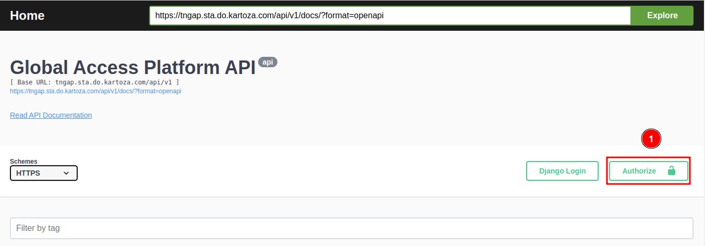
To authorize, please enter your Username and Password Once you have entered your credentials, click the Authorize button to complete the authorisation process.
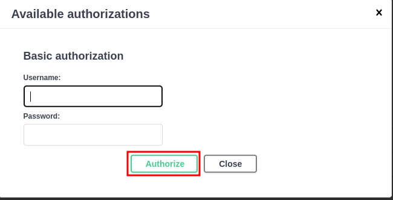
Click on the close button or cross button to close the authorisation form.
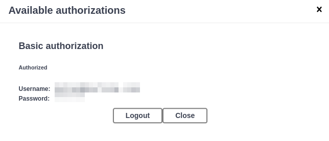
Examples of Usage of the OSIRIS II API
Please note that the data in the examples provided below DO NOT reflect the actual data in TomorrowNow.
Accessing the OSIRIS II API¶
To use the API click on the Weather & Climate Data 1️⃣.
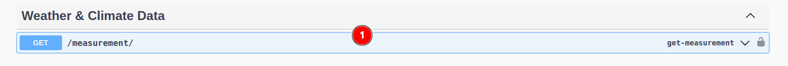
Weather & Climate Data API:
Click on the GET API it will show the parameters to enter to get the data. Click on the 1️⃣ Try it out button, to fill the detailed in the 2️⃣ available request parameters. After filling the details click on the 3️⃣ Execute button, to run the API.
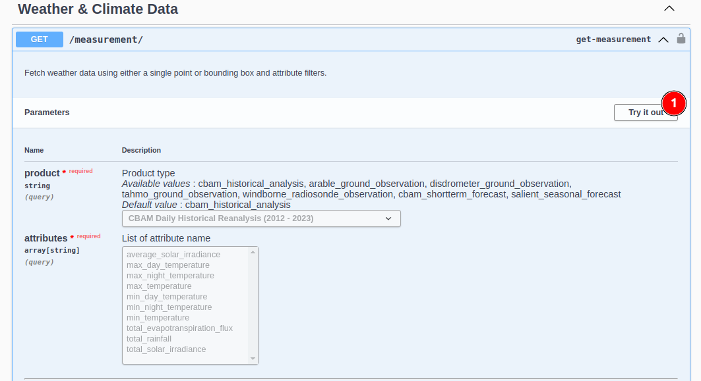 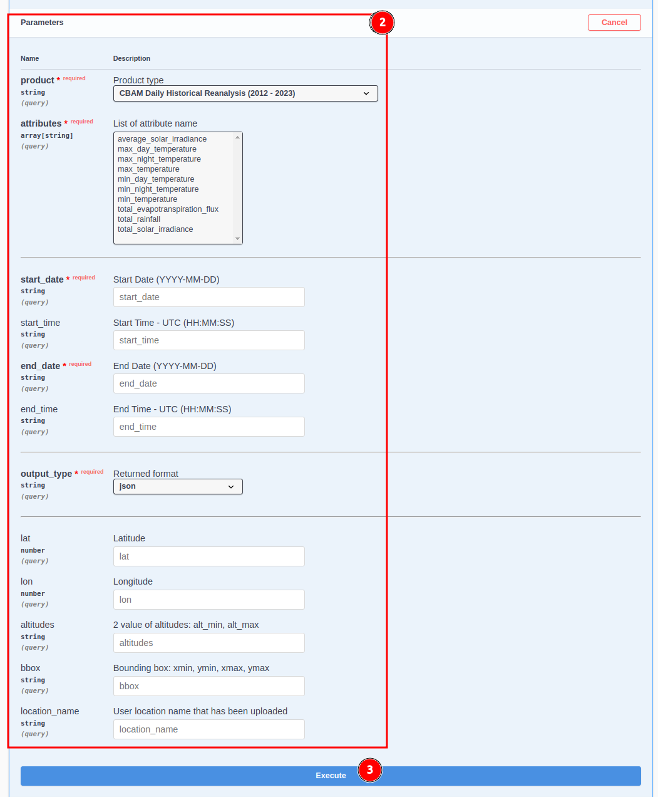
Example of response:
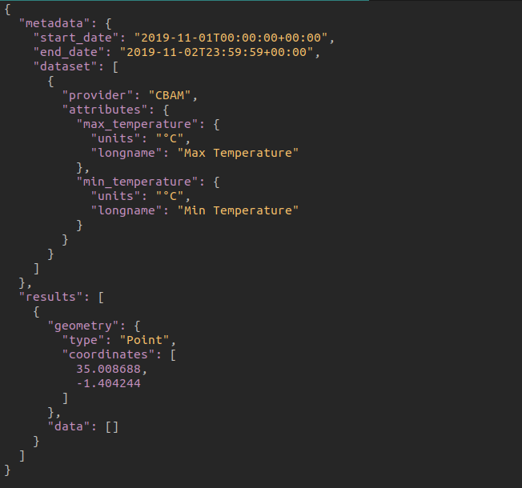
Available format types
JSON¶
This type is only available for querying by single point.
CSV¶
The user can download the file to check the response 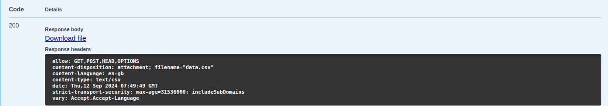
NETCDF¶
The user can download the file to check the response 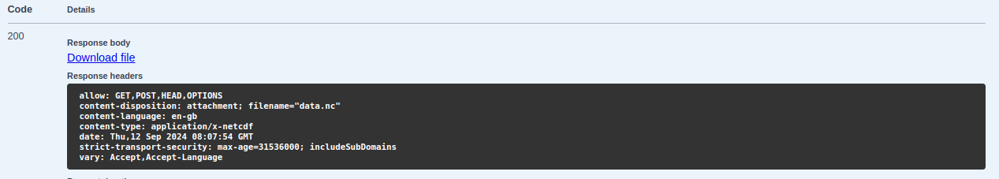
To read/write the netcdf file user can refer to below link https://docs.xarray.dev/en/stable/user-guide/io.html#netcdf
Example of codes to access the API
Python¶
import requests
from requests.auth import HTTPBasicAuth
url = "https://tngap.sta.do.kartoza.com/api/v1/measurement/?lat=-1.404244&lon=35.008688&attributes=max_temperature,min_temperature&start_date=2019-11-01&end_date=2019-11-02&product=cbam_historical_analysis&output_type=json"
payload={}
headers = {}
basic = HTTPBasicAuth('YOUR_USERNAME', 'YOUR_PASSWORD')
response = requests.request("GET", url, auth=basic, headers=headers, data=payload)
print(response.json())
CURL¶
curl --location 'https://tngap.sta.do.kartoza.com/api/v1/measurement/?lat=-1.404244&lon=35.008688&attributes=max_temperature%2Cmin_temperature&start_date=2019-11-01&end_date=2019-11-02&product=cbam_historical_analysis&output_type=json' -u 'YOUR_USERNAME:YOUR_PASSWORD' -H 'User-Agent: PostmanRuntime/7.42.0'
JavaScript-JQuery¶
var settings = {
"url": "https://tngap.sta.do.kartoza.com/api/v1/measurement/?lat=-1.404244&lon=35.008688&attributes=max_temperature,min_temperature&start_date=2019-11-01&end_date=2019-11-02&product=cbam_historical_analysis&output_type=json",
"method": "GET",
"timeout": 0,
"headers": {
"Authorization": "Basic *****"
},
};
$.ajax(settings).done(function (response) {
console.log(response);
});
Upload Location API:
Using the Location API, you can upload the geometry to query the data by polygon or list of point. You can upload the geometry in one of format: geojson/shapefile/gpkg. The file must be in WGS84 or CRS 4326. The uploaded location will have expiry date time (2 months). Once the server removes your geometry after the expiry time, you need to reupload your geometry.
Note: when using shapefile, the .shp, .dbf, .shx files must be in the zip root directory.
Click on the 1️⃣ Upload Location POST API to view the usage option. Click on the 2️⃣ Try it out button, to enable the fields to enter the attributes.
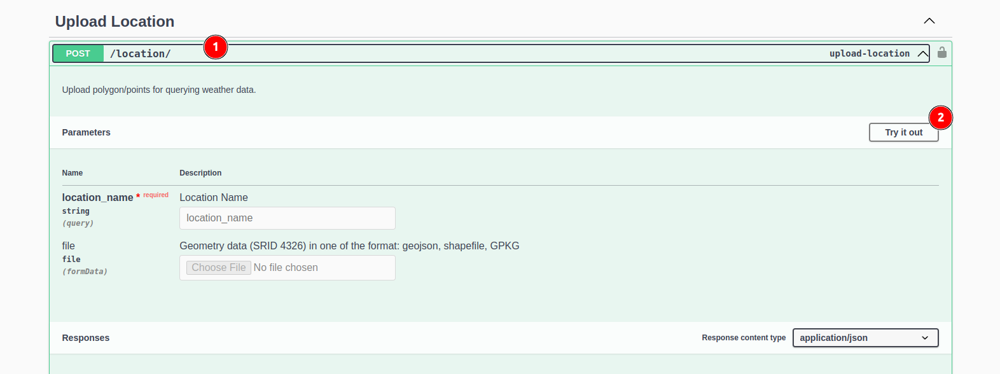
Fill the location_name and select your file to upload in the 1️⃣ available fields. After filling the details click on the 2️⃣ Execute button, to run the API.
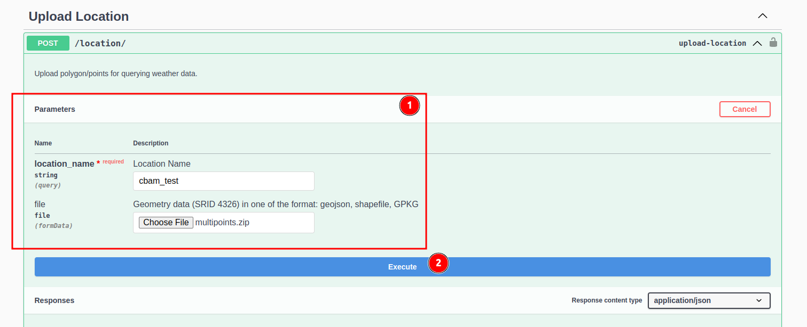
Example of response:
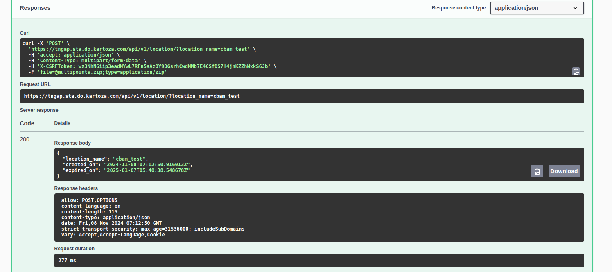
You can see the expiry date time for your geometry in the expired_on field.
API Postman Collection¶
You can download the postman collection below and import the API collection using your postman. Once imported, you need to set the variable gap_api_username and gap_api_password using your credentials.
Error codes¶
| Response code | Message | Reason |
|---|---|---|
| 400 | Unknown geometry type! | Use geometry with type Polygon/Multipolygon/MultiPoint to make a request using POST method |
| 400 | Output format json is only available for single point query! | JSON output is only available for GET method with singe point query. Please use csv/netcdf output format! |
| 400 | No matching attribute found! | The attribute list cannot be found in the product type. |
| 400 | Attribute with ensemble cannot be mixed with non-ensemble | When requesting for product type salient_seasonal_forecast and output is csv, the attribute that is in ensemble (50-values) cannot be requested with the attribute that does not have ensemble. Please use netcdf output format instead! |
| 400 | Incorrect output type | Use either json, csv, netcdf or ascii |
| 404 | No weather data is found for given queries | |
| 429 | Too many requests | You have hit the rate limit |